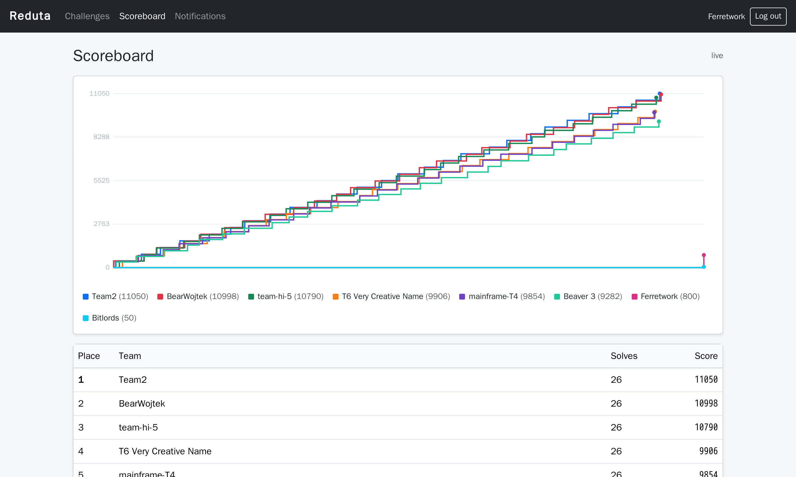
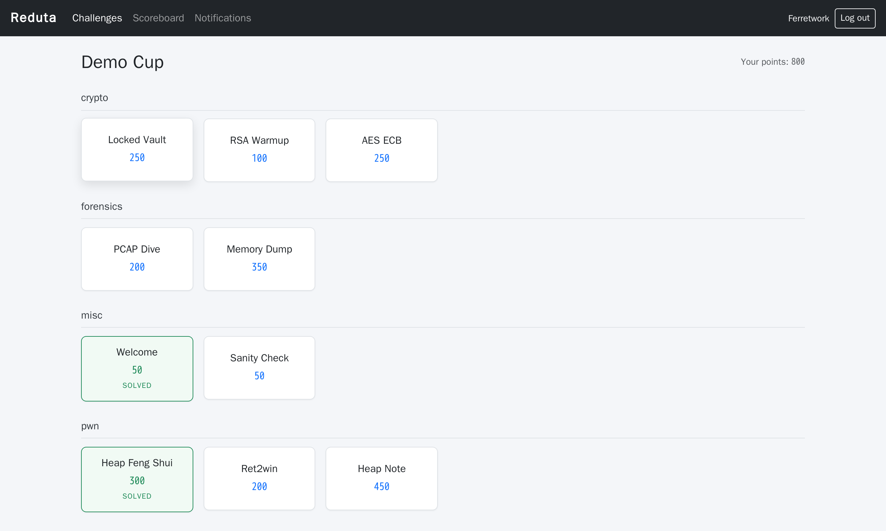
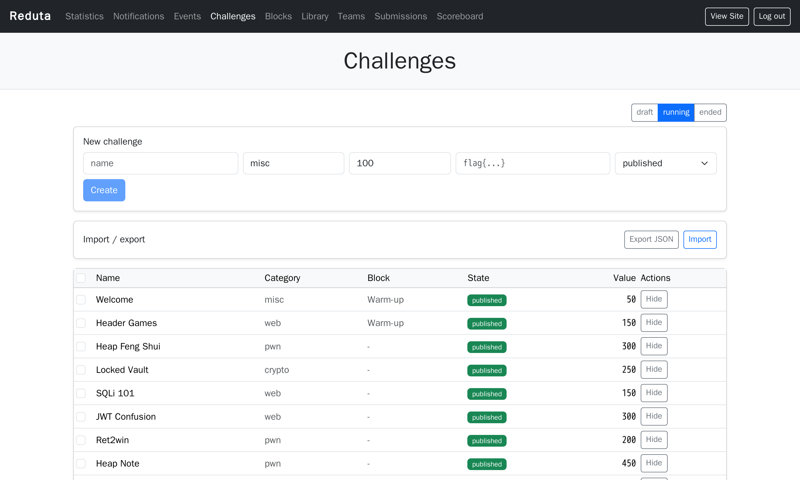
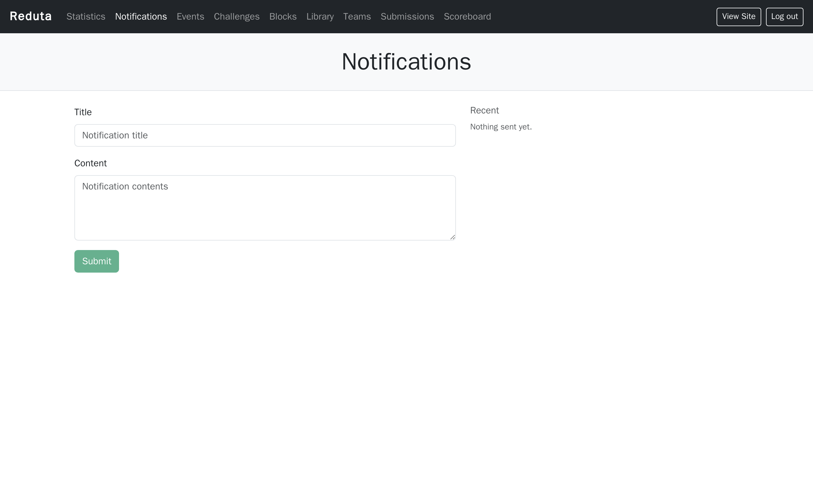

A Capture The Flag platform that stays usable at 200 challenges.
Reduta runs large CTF events without the operational pain of older tools: a reusable challenge library, block scheduling, global teams, bulk admin actions, a denormalized live scoreboard, clean import and export, and King of the Hill as a plugin, behind a fast web UI for players and admins.
How it works See the UI
What it is
Reduta is a self-hosted platform for organizing Capture The Flag competitions. Organizers build challenges once and reuse them across events, group them into blocks with time windows and unlock rules, register teams, and run scoring in real time. Players form teams, work through challenges by category, and submit flags. Everything an organizer touches, from bulk edits to notifications to imports, is designed to stay fast when there are hundreds of challenges and teams.
Challenge library
Reusable challenges with immutable revisions. Editing creates a new version, so history and rollback are free. Embed a pinned revision into an event.
Blocks and scheduling
Group challenges into blocks with availability windows (RRULE) and per-team unlock rules: solved, points, block completion, and time gates.
Global teams
A player creates a team or joins one with an invite code. Admins assign teams to events; only assigned teams play and appear on the scoreboard.
Bulk admin actions
Select by filter, then publish, hide, assign a block, retag or delete in one step, with an audit trail and undo.
Import and export
Round-trip an event as JSON with a dry-run plan, or bring challenges across from a CTFd export.
Plugins
Out-of-process plugins over signed webhooks and a narrow token-scoped API, so King of the Hill is wrapped rather than rewritten.
How it works
The flow from an empty instance to a running competition.
- Build challenges. Admins add challenges to a library or straight into an event, set categories, points and flags, and group them into blocks with schedules.
- Create the event. An event embeds challenges at a pinned revision, with its own points, visibility and windows. State moves from draft to running to ended.
- Players form teams. A player registers, then creates a team or joins one with an invite code. One team per player, shared across the platform.
- Admins assign teams. Admins add teams to an event. Only assigned teams can open it, submit flags and show on its scoreboard.
- Players solve. The challenge board groups tasks by category, shows locked and scheduled states, and submits flags from a side panel. Wrong guesses are hashed, not stored in plaintext.
- Scoring is live. Static or dynamic points, first blood bonuses, rate limiting, and a denormalized scoreboard that updates over WebSocket as solves land.
- Admins run the event. A dedicated admin panel handles bulk actions, notifications, submissions review, import and export, and plugins, all from one place.
Player experience
Dense and quick: a challenge board by category, a task panel for submitting flags, and a live scoreboard.


Admin panel
A separate admin surface with its own navigation: statistics, notifications, events, challenges, blocks, the library, teams, submissions and the scoreboard.



Under the hood
Backend: Go modular monolith (chi, pgx, golang-migrate, asynq, nhooyr websocket), PostgreSQL 16, Redis 7. Frontend: React 19, TypeScript, Vite, TanStack Query. Out-of-process plugins over signed webhooks. A single command brings up the API, worker, database, cache, the reference King of the Hill plugin, and the web UI:
docker compose up